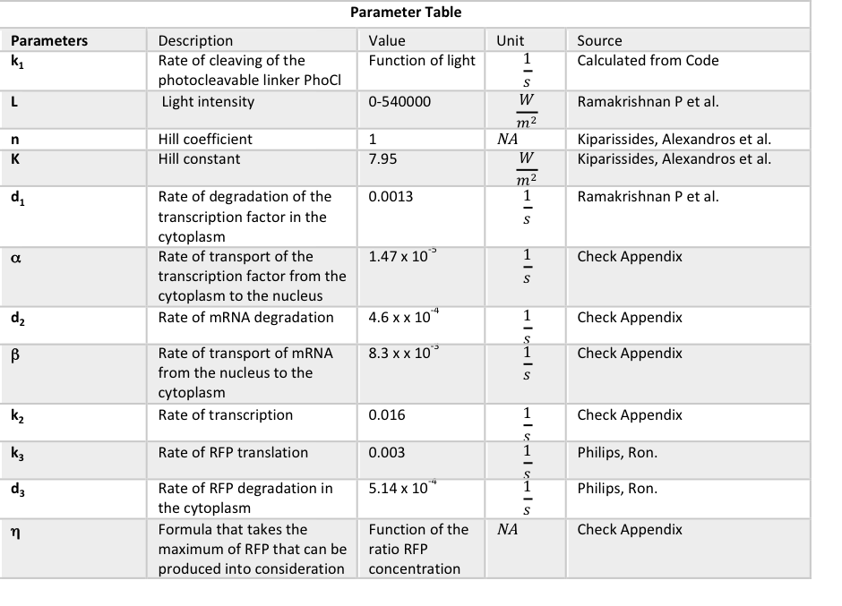

Cracking the Model
Methods of parameter optimisation
Mathematical Modelling describes complex biological system with mathematical equations and concepts. Setting up the initial conditions in the model is not that straight forward. If no experimental data is yet available, reasonable assumptions based on literature, logic and quantitative analysis need to be made. We believe that the initial assumptions made are crucial to crack the model.
Once, established the parameters need to constantly be optimised with experimental data and/or literature data in order to fit reality to its maximum. Parameter optimisation adds all the wieght to a model's credibility, this is why we decidedto approach this in 2 ways: Sensitivity Analysis and Paramter Sampling.
Scroll down to find out more!
Sensitivity Analysis
Sensitivity Analysis is conventionally used for parameter optimisation. A range of independent variables are tested in this technique and their impact on the dependent variable is evaluated.
Method
- Identify the independent variables to be optimised
- Obtain ranges of values to be tested from literature
- Run the model and plot the graphs with the range of tested values and identify the optimal condition
- Re-run the initial model to check how the optimised parameters affected the rate limiting step, i.e. determine if the optimised step is prevailed to be the rate limiting step in the overall cellular mechanism
- Determine the areas in which research could be performed to optimise the parameters (Wet Lab contribution)
Sensitivity Analysis method applied to LEGIT model
Assessing the impact specific independent variables have on the rate of intimin transport (dependent variable)
The equation below describes the rate of intimin production in terms of of Km and Vmax

Sensitivity Analysis method applied to LAME model
Assessing the impact of the nuclear export of transcript and the rate of GFP degradation on the overall rate of GFP translation.
Parameter Sampling
Parameter sampling (ensemble modelling), is a method of parameter optimisation, which relies on the random sampling of parameter values within a specified range. A probability density function (PDF) determines the distribution of the continuous random variables evaluated in the function. Parameter sampling considers biological noise, making it a more realistic representation of the behaviour of a biological system.
Method
- Identify the parameters to be optimised
- Collect raw data from literature
- Process raw data by assigning weights to data depending on the similarity to the to-be-optimised parameter
- Generate probability densitiy functions (pdf); input the sample size, standard deviation and weighted mean
LEGIT model
Assessing the impact of randomly generated discrete variables on the rate of transport of intimin. For this the values of Km and Vmax are evaluated.
- Conditions for intimin
- Size: 94 kDa
- Optimal pH conditions: 7
- Native organism: E.coli
Weighted mean of Km: 0.0147 uM
Weighted mean of Vmax: 300000 s-1(1 s.f.)
Click here to check out the data collected to optimise the value of Km
Click here to check out the data collected to optimise the value of Vmax
LAME model
Assessing the impact of randomly generated discrete variables on the rate of translation of GFP. For this the rate of nuclear export of the transcript and the rate of GFP degradation are evaluated.
- Conditions for the GFP protein
- Size: 27.9 kDa
- Location of protein: Cytoplasm
- Native organism: CHO cells
Weighted mean of rate of nuclear export: 1.43 x 10-4 s-1
Weighted mean of rate of degradation: 8.96 x 10-1 s-1
Click here to check out the data collected to optimise the rate of nuclear export
Click here to check out the data collected to optimise the rate of degradation
LAME MODEL
- Mass action kinetics
- The reaction is taking place in a petri dish
- The same light intensity reaches every cell (thus they are all activated at the same time with the same light intensity)
- All cells are at their exponential growth phase
- PhoCl always cleaves when exposed to violet light (400 nm)
- LACE (transmembrane protein, photocleavable linker and the transcription factor) are constitutively expressed
- The cells are not going through the cell cycle when they are induced for the photocleavage of p65 (As during the cell cycle eukaryotic cells double the size of their nucleus)
GOLIT MODEL
OptoFlux MODEL
Initial Assumptions
Set of assumptions made for initial conditions to set up the models
LEGIT model
LAME model
Species
LEGIT model
LAME model
Parameters
LEGIT model
LAME model
Selecting our Software
This summer we decided to run our models on two different softwares: MATLAB and Python. Both are high level languages that allowed us to create robust simulations.
Upon starting iGEM, everyone on the modelling team wanted to learn a new programming language. Python’s versatile applications and the ability to import packages that other programmers have developed make it easy to get started with new projects. Moreover, since Python is an open source software it is relatively easy to find resources online to help troubleshoot our codes. Since Python is a high-level language we didn’t require a lot of training to become familiar with the language. We organised a couple of tutorial sessions with our iGEM advisers and then jumped straight into working with it.
We also decided to use MATLAB for our models, as we were already familiar with this language from our engineering degrees. MATLAB is a powerful language with a very large built-in database of algorithms for image processing. This was particularly useful for the adaptation of the Game of Life.
Bibliography
- Thereza, C., Marina, I., Luciana.Cambricoli, d. and Olivia, C. (2004). Expression of green fluorescent protein (GFPuv) in Escherichia coli DH5-a, under different growth conditions. African Journal of Biotechnology, 3(1), pp.105-111.
- Wlab.ethz.ch. (2017). Cell Surface Protein Atlas. [online] Available at: http://wlab.ethz.ch/cspa/#abstract [Accessed 4 Sep. 2017].
- Sciencedirect.com. (2017). Membrane integration of E. coli model membrane proteins - ScienceDirect. [online] Available at: http://www.sciencedirect.com/science/article/pii/S0167488904000813 [Accessed 4 Sep. 2017].
- Arun KH e. Green fluorescent proteins in receptor: an emerging tool for drug discovery. – PubMed –NCBI [Internet]. Ncbi.nlm.gov.2017 [cited 21 August 2017]. Available from: https://www.ncbi.nlm.nih.gov/pubmed/15596111
- [internet] UVGermicidalTechnicalData. [cited 10 September 2017] http://www.pveducation.org/pvcdrom/effect-of-light-intensity (accessed 10 September 2017).
- Jayaraman, P., Devarajan, K., Chua, T. K., Zhang, H., Gunawan, E. and Loo Poh, C. Blue light-mediated transcriptional activation and repression of gene expression in bacteria. NCBI. 2016;44(14):6994–7005.
- Philips, Ron. "Cell Biology By The Numbers." Book.bionumbers.org. N.p., 2017. Web. 10 Sept. 2017.
- Kiparissides, Alexandros et al. "Modelling The Delta1/Notch1 Pathway: In Search Of The Mediator(S) Of Neural Stem Cell Differentiation." PLoS ONE 6.2 (2011): e14668. Web.
- Carbonell-Ballestero M, Duran-Nebreda S, Montanez R, Sole R, Macia J, Rodriguez-Caso C. A bottom-up characterization of transfer functions for synthetic biology designs: lessons from enzymology. 2017.
- Km & Vmax [Internet]. Mofetsrv.mofet.macam98.ac.il. 2017 [cited 21 September 2017]. Available from: http://mofetsrv.mofet.macam98.ac.il/~rafid/BIOLOGY/biochem/infopages/aminoacids/www-biol.paisley.ac.uk/courses/stfunmac/glossary/Km.html
- Ramakrishnan P, Maclean M, MacGregor S, Anderson J, Grant M. Cytotoxic responses to 405nm light exposure in mammalian and bacterial cells: Involvement of reactive oxygen species. 2017.
- Zitieren eine Webseite - Cite This For Me [Internet]. Karger.com. 2017 [cited 28 September 2017]. Available from: https://www.karger.com/Article/Pdf/131439
- HeLa cell volume - Human Homo sapiens - BNID 103725 [Internet]. Bionumbers.hms.harvard.edu. 2017 [cited 28 September 2017]. Available from: http://bionumbers.hms.harvard.edu/bionumber.aspx?id=103725&ver=3
- Baumann N, Vidugiriene J, Machamer C, Menon A. Cell Surface Display and Intracellular Trafficking of Free Glycosylphosphatidylinositols in Mammalian Cells. 2017.
- Cortes L, Vainauskas S, Dai N, McClung C, Shah M, Benner J et al. Proteomic identification of mammalian cell surface derived glycosylphosphatidylinositol-anchored proteins through selective glycan enrichment. 2017.
- Key Numbers for Cell Biologists [Internet]. Bionumbers.org; 2017 [cited 28 September 2017]. Available from: http://bionumbers.hms.harvard.edu/Includes/KeyNumbersLinks.pdf
- Ramakrishnan P, Maclean M, MacGregor S, Anderson J, Grant M. Cytotoxic responses to 405nm light exposure in mammalian and bacterial cells: Involvement of reactive oxygen species. 2017.